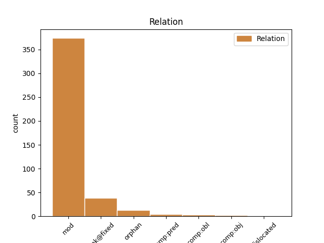
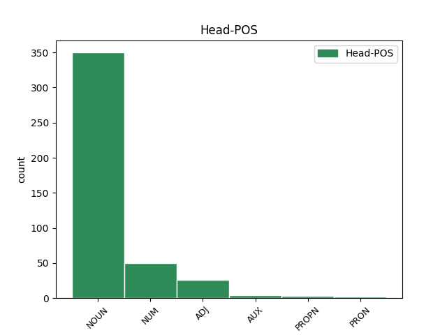
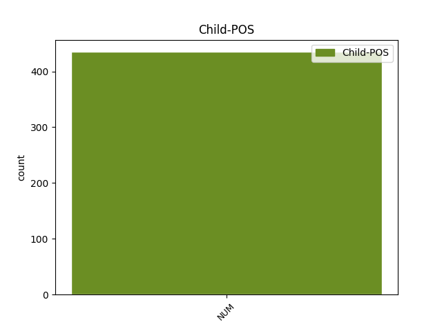

Distribution of features within this leaf



Agreement Rules sorted by frequency.
- When the dependent token is the modifer(mod) of the head token, and the head token is NOUN and the dependent token is NUM.
1 ἀνὰ _ _ _ _ 0 _ _ _
2 εἷς _ _ _ _ 0 _ _ _
3 ἕκαστος _ _ _ _ 0 _ _ _
4 τῶν _ _ _ _ 0 _ _ _
5 πυλώνων _ _ _ _ 0 _ _ _
6 ἦν _ _ _ _ 0 _ _ _
7 ἐξ _ _ _ _ 0 _ _ _
8 ἑνὸς εἷς NUM Ma Case=Gen|Gender=Masc|Number=Sing 9 mod _ ref=REV_21.21
9 μαργαρίτου μαργαρίτης NOUN Nb Case=Gen|Gender=Masc|Number=Sing 0 _ _ _
1 καὶ _ _ _ _ 0 _ _ _
2 ἐμέτρησεν _ _ _ _ 0 _ _ _
3 τὸ _ _ _ _ 0 _ _ _
4 τεῖχος _ _ _ _ 0 _ _ _
5 αὐτῆς _ _ _ _ 0 _ _ _
6 ἑκατὸν _ _ _ _ 0 _ _ _
7 τεσσεράκοντα τεσσεράκοντα NUM Ma Case=Gen|Gender=Masc|Number=Plur 0 _ _ _
8 τεσσάρων τέσσαρες NUM Ma Case=Gen|Gender=Masc|Number=Plur 7 unk@fixed _ ref=REV_21.17
9 πηχῶν _ _ _ _ 0 _ _ _
10 μέτρον _ _ _ _ 0 _ _ _
11 ἀνθρώπου _ _ _ _ 0 _ _ _
12 ὅ _ _ _ _ 0 _ _ _
13 ἐστιν _ _ _ _ 0 _ _ _
14 ἀγγέλου _ _ _ _ 0 _ _ _
1 καὶ _ _ _ _ 0 _ _ _
2 ἔπεσαν _ _ _ _ 0 _ _ _
3 οἱ _ _ _ _ 0 _ _ _
4 πρεσβύτεροι πρέσβυς ADJ A- Case=Nom|Degree=Cmp|Gender=Masc|Number=Plur 0 _ _ _
5 οἱ _ _ _ _ 0 _ _ _
6 εἴκοσι εἴκοσι NUM Ma Case=Nom|Gender=Masc|Number=Plur 4 mod _ ref=REV_19.4
7 τέσσαρες _ _ _ _ 0 _ _ _
8 καὶ _ _ _ _ 0 _ _ _
9 τὰ _ _ _ _ 0 _ _ _
10 τέσσερα _ _ _ _ 0 _ _ _
11 ζῷα _ _ _ _ 0 _ _ _
12 καὶ _ _ _ _ 0 _ _ _
13 προσεκύνησαν _ _ _ _ 0 _ _ _
14 τῷ _ _ _ _ 0 _ _ _
15 θεῷ _ _ _ _ 0 _ _ _
16 τῷ _ _ _ _ 0 _ _ _
17 καθημένῳ _ _ _ _ 0 _ _ _
18 ἐπὶ _ _ _ _ 0 _ _ _
19 τῷ _ _ _ _ 0 _ _ _
20 θρόνῳ _ _ _ _ 0 _ _ _
21 λέγοντες _ _ _ _ 0 _ _ _
1 καὶ _ _ _ _ 0 _ _ _
2 ἐγένετο _ _ _ _ 0 _ _ _
3 ἐν _ _ _ _ 0 _ _ _
4 τῷ _ _ _ _ 0 _ _ _
5 διαχωρίζεσθαι _ _ _ _ 0 _ _ _
6 αὐτοὺς _ _ _ _ 0 _ _ _
7 ἀπ’ _ _ _ _ 0 _ _ _
8 αὐτοῦ _ _ _ _ 0 _ _ _
9 εἶπεν _ _ _ _ 0 _ _ _
10 ὁ _ _ _ _ 0 _ _ _
11 Πέτρος _ _ _ _ 0 _ _ _
12 πρὸς _ _ _ _ 0 _ _ _
13 τὸν _ _ _ _ 0 _ _ _
14 Ἰησοῦν _ _ _ _ 0 _ _ _
15 ἐπιστάτα _ _ _ _ 0 _ _ _
16 καλόν _ _ _ _ 0 _ _ _
17 ἐστιν _ _ _ _ 0 _ _ _
18 ἡμᾶς _ _ _ _ 0 _ _ _
19 ὧδε _ _ _ _ 0 _ _ _
20 εἶναι _ _ _ _ 0 _ _ _
21 καὶ _ _ _ _ 0 _ _ _
22 ποιήσωμεν _ _ _ _ 0 _ _ _
23 σκηνὰς _ _ _ _ 0 _ _ _
24 τρεῖς _ _ _ _ 0 _ _ _
25 μίαν εἷς NUM Ma Case=Acc|Gender=Fem|Number=Sing 0 _ _ _
26 σοὶ _ _ _ _ 0 _ _ _
27 καὶ _ _ _ _ 0 _ _ _
28 μίαν _ _ _ _ 0 _ _ _
29 Μωϋσεῖ _ _ _ _ 0 _ _ _
30 καὶ _ _ _ _ 0 _ _ _
31 μίαν εἷς NUM Ma Case=Acc|Gender=Fem|Number=Sing 25 orphan _ ref=LUKE_9.33
32 Ἡλείᾳ _ _ _ _ 0 _ _ _
33 μὴ _ _ _ _ 0 _ _ _
34 εἰδὼς _ _ _ _ 0 _ _ _
35 ὃ _ _ _ _ 0 _ _ _
36 λέγει _ _ _ _ 0 _ _ _
1 λέγει _ _ _ _ 0 _ _ _
2 Νικόδημος _ _ _ _ 0 _ _ _
3 πρὸς _ _ _ _ 0 _ _ _
4 αὐτούς _ _ _ _ 0 _ _ _
5 εἷς εἷς NUM Ma Case=Nom|Gender=Masc|Number=Sing 6 comp:pred _ ref=JOHN_7.50
6 ὢν εἰμί AUX V- Case=Nom|Gender=Masc|Number=Sing|Tense=Pres|VerbForm=Part|Voice=Act 0 _ _ _
7 ἐξ _ _ _ _ 0 _ _ _
8 αὐτῶν _ _ _ _ 0 _ _ _
1 ἐπὶ _ _ _ _ 0 _ _ _
2 μὲν _ _ _ _ 0 _ _ _
3 τέσσερας _ _ _ _ 0 _ _ _
4 Βᾶττους _ _ _ _ 0 _ _ _
5 καὶ _ _ _ _ 0 _ _ _
6 Ἀρκεσίλεως Ἀρκεσίλεως PROPN Ne Case=Acc|Gender=Masc|Number=Plur 0 _ _ _
7 τέσσερας τέσσαρες NUM Ma Case=Acc|Gender=Masc|Number=Plur 6 mod _ ref=4.163.2
8 ὀκτὼ _ _ _ _ 0 _ _ _
9 ἀνδρῶν _ _ _ _ 0 _ _ _
10 γενεάς _ _ _ _ 0 _ _ _
11 διδοῖ _ _ _ _ 0 _ _ _
12 ὑμῖν _ _ _ _ 0 _ _ _
13 Λοξίης _ _ _ _ 0 _ _ _
14 βασιλεύειν _ _ _ _ 0 _ _ _
15 Κυρήνης _ _ _ _ 0 _ _ _
1 εἰ _ _ _ _ 0 _ _ _
2 δὲ _ _ _ _ 0 _ _ _
3 δὴ _ _ _ _ 0 _ _ _
4 ἐθελήσει _ _ _ _ 0 _ _ _
5 τὸ _ _ _ _ 0 _ _ _
6 ἕτερον _ _ _ _ 0 _ _ _
7 τῶν _ _ _ _ 0 _ _ _
8 ἐτέων _ _ _ _ 0 _ _ _
9 μηνὶ _ _ _ _ 0 _ _ _
10 μακρότερον _ _ _ _ 0 _ _ _
11 γίνεσθαι _ _ _ _ 0 _ _ _
12 ἵνα _ _ _ _ 0 _ _ _
13 δὴ _ _ _ _ 0 _ _ _
14 αἱ _ _ _ _ 0 _ _ _
15 ὧραι _ _ _ _ 0 _ _ _
16 συμβαίνωσι _ _ _ _ 0 _ _ _
17 παραγινόμεναι _ _ _ _ 0 _ _ _
18 ἐς _ _ _ _ 0 _ _ _
19 τὸ _ _ _ _ 0 _ _ _
20 δέον _ _ _ _ 0 _ _ _
21 μῆνες _ _ _ _ 0 _ _ _
22 μὲν _ _ _ _ 0 _ _ _
23 παρὰ _ _ _ _ 0 _ _ _
24 τὰ _ _ _ _ 0 _ _ _
25 ἑβδομήκοντα _ _ _ _ 0 _ _ _
26 ἔτεα _ _ _ _ 0 _ _ _
27 οἱ _ _ _ _ 0 _ _ _
28 ἐμβόλιμοι _ _ _ _ 0 _ _ _
29 γίνονται _ _ _ _ 0 _ _ _
30 τριήκοντα _ _ _ _ 0 _ _ _
31 πέντε _ _ _ _ 0 _ _ _
32 ἡμέραι ἡμέρα NOUN Nb Case=Nom|Gender=Fem|Number=Plur 0 _ _ _
33 δὲ _ _ _ _ 0 _ _ _
34 ἐκ _ _ _ _ 0 _ _ _
35 τῶν _ _ _ _ 0 _ _ _
36 μηνῶν _ _ _ _ 0 _ _ _
37 τούτων _ _ _ _ 0 _ _ _
38 χίλιαι χίλιοι NUM Ma Case=Nom|Gender=Fem|Number=Plur 32 orphan _ ref=1.32.3
39 πεντήκοντα _ _ _ _ 0 _ _ _
1 εἶς εἷς NUM Ma Case=Nom|Gender=Masc|Number=Sing 9 dislocated _ ref=1.45.2
2 δὲ _ _ _ _ 0 _ _ _
3 οὐ _ _ _ _ 0 _ _ _
4 σύ _ _ _ _ 0 _ _ _
5 μοι _ _ _ _ 0 _ _ _
6 τοῦδε _ _ _ _ 0 _ _ _
7 τοῦ _ _ _ _ 0 _ _ _
8 κακοῦ _ _ _ _ 0 _ _ _
9 αἴτιος αἴτιος ADJ A- Case=Nom|Degree=Pos|Gender=Masc|Number=Sing 0 _ _ _
10 εἰ _ _ _ _ 0 _ _ _
11 μὴ _ _ _ _ 0 _ _ _
12 ὅσον _ _ _ _ 0 _ _ _
13 ἀέκων _ _ _ _ 0 _ _ _
14 ἐξεργάσαο _ _ _ _ 0 _ _ _
15 ἀλλὰ _ _ _ _ 0 _ _ _
16 θεῶν _ _ _ _ 0 _ _ _
17 κού _ _ _ _ 0 _ _ _
18 τις _ _ _ _ 0 _ _ _
19 ὅς _ _ _ _ 0 _ _ _
20 μοι _ _ _ _ 0 _ _ _
21 καὶ _ _ _ _ 0 _ _ _
22 πάλαι _ _ _ _ 0 _ _ _
23 προεσήμαινε _ _ _ _ 0 _ _ _
24 τὰ _ _ _ _ 0 _ _ _
25 μέλλοντα _ _ _ _ 0 _ _ _
26 ἔσεσθαι _ _ _ _ 0 _ _ _
1 καί _ _ _ _ 0 _ _ _
2 σφι _ _ _ _ 0 _ _ _
3 ὑπ’ _ _ _ _ 0 _ _ _
4 Ἀργείων _ _ _ _ 0 _ _ _
5 ἐπεβλήθη _ _ _ _ 0 _ _ _
6 ζημίη _ _ _ _ 0 _ _ _
7 χίλια _ _ _ _ 0 _ _ _
8 τάλαντα _ _ _ _ 0 _ _ _
9 ἐκτῖσαι _ _ _ _ 0 _ _ _
10 πεντακόσια πεντακόσιοι NUM Ma Case=Acc|Gender=Neut|Number=Plur 11 orphan _ ref=6.92.2
11 ἑκατέρους ἑκάτερος ADJ A- Case=Acc|Degree=Pos|Gender=Masc|Number=Plur 0 _ _ _
1 ἀπὸ _ _ _ _ 0 _ _ _
2 δὲ _ _ _ _ 0 _ _ _
3 Ὑρίης _ _ _ _ 0 _ _ _
4 πόλιος _ _ _ _ 0 _ _ _
5 τὰς _ _ _ _ 0 _ _ _
6 ἄλλας _ _ _ _ 0 _ _ _
7 οἰκίσαι _ _ _ _ 0 _ _ _
8 τὰς _ _ _ _ 0 _ _ _
9 δὴ _ _ _ _ 0 _ _ _
10 Ταραντῖνοι _ _ _ _ 0 _ _ _
11 χρόνῳ _ _ _ _ 0 _ _ _
12 ὕστερον _ _ _ _ 0 _ _ _
13 πολλῷ _ _ _ _ 0 _ _ _
14 ἐξανιστάντες _ _ _ _ 0 _ _ _
15 προσέπταισαν _ _ _ _ 0 _ _ _
16 μεγάλως _ _ _ _ 0 _ _ _
17 ὥστε _ _ _ _ 0 _ _ _
18 φόνος _ _ _ _ 0 _ _ _
19 Ἑλληνικὸς _ _ _ _ 0 _ _ _
20 μέγιστος _ _ _ _ 0 _ _ _
21 οὗτος _ _ _ _ 0 _ _ _
22 δὴ _ _ _ _ 0 _ _ _
23 ἐγένετο _ _ _ _ 0 _ _ _
24 πάντων _ _ _ _ 0 _ _ _
25 τῶν _ _ _ _ 0 _ _ _
26 ἡμεῖς _ _ _ _ 0 _ _ _
27 ἴδμεν _ _ _ _ 0 _ _ _
28 αὐτῶν _ _ _ _ 0 _ _ _
29 τε _ _ _ _ 0 _ _ _
30 Ταραντίνων _ _ _ _ 0 _ _ _
31 καὶ _ _ _ _ 0 _ _ _
32 Ῥηγίνων _ _ _ _ 0 _ _ _
33 οἳ ὅς PRON Pr Case=Nom|Gender=Masc|Number=Plur|PronType=Rel 0 _ _ _
34 ὑπὸ _ _ _ _ 0 _ _ _
35 Μικύθου _ _ _ _ 0 _ _ _
36 τοῦ _ _ _ _ 0 _ _ _
37 Χοίρου _ _ _ _ 0 _ _ _
38 ἀναγκαζόμενοι _ _ _ _ 0 _ _ _
39 τῶν _ _ _ _ 0 _ _ _
40 ἀστῶν _ _ _ _ 0 _ _ _
41 καὶ _ _ _ _ 0 _ _ _
42 ἀπικόμενοι _ _ _ _ 0 _ _ _
43 τιμωροὶ _ _ _ _ 0 _ _ _
44 Ταραντίνοισι _ _ _ _ 0 _ _ _
45 ἀπέθανον _ _ _ _ 0 _ _ _
46 τρισχίλιοι τρισχίλιοι NUM Ma Case=Nom|Gender=Masc|Number=Plur 33 mod _ ref=7.170.3
47 οὕτω _ _ _ _ 0 _ _ _
Disagree Examples:
1 τὸν _ _ _ _ 0 _ _ _
2 δὲ _ _ _ _ 0 _ _ _
3 ἕνα εἷς NUM Ma Case=Acc|Gender=Masc|Number=Sing 0 _ _ _
4 λέγουσι _ _ _ _ 0 _ _ _
5 τὸν _ _ _ _ 0 _ _ _
6 περιλειφθέντα _ _ _ _ 0 _ _ _
7 τῶν _ _ _ _ 0 _ _ _
8 τριηκοσίων τριακόσιοι NUM Ma Case=Gen|Gender=Masc|Number=Plur 3 mod _ ref=1.82.8
9 Ὀθρυάδην _ _ _ _ 0 _ _ _
10 αἰσχυνόμενον _ _ _ _ 0 _ _ _
11 ἀπονοστέειν _ _ _ _ 0 _ _ _
12 ἐς _ _ _ _ 0 _ _ _
13 Σπάρτην _ _ _ _ 0 _ _ _
14 τῶν _ _ _ _ 0 _ _ _
15 οἱ _ _ _ _ 0 _ _ _
16 συλλοχιτέων _ _ _ _ 0 _ _ _
17 διεφθαρμένων _ _ _ _ 0 _ _ _
18 αὐτοῦ _ _ _ _ 0 _ _ _
19 μιν _ _ _ _ 0 _ _ _
20 ἐν _ _ _ _ 0 _ _ _
21 τῇσι _ _ _ _ 0 _ _ _
22 Θυρέῃσι _ _ _ _ 0 _ _ _
23 καταχρήσασθαι _ _ _ _ 0 _ _ _
24 ἑωυτόν _ _ _ _ 0 _ _ _
1 ὁ _ _ _ _ 0 _ _ _
2 δὲ _ _ _ _ 0 _ _ _
3 ὡς _ _ _ _ 0 _ _ _
4 ἔσχε _ _ _ _ 0 _ _ _
5 τὴν _ _ _ _ 0 _ _ _
6 ἀρχήν _ _ _ _ 0 _ _ _
7 τοὺς _ _ _ _ 0 _ _ _
8 Μήδους _ _ _ _ 0 _ _ _
9 ἠνάγκασε _ _ _ _ 0 _ _ _
10 ἓν εἷς NUM Ma Case=Nom|Gender=Neut|Number=Sing 11 mod _ ref=1.98.3
11 πόλισμα πόλισμα NOUN Nb Case=Acc|Gender=Neut|Number=Sing 0 _ _ _
12 ποιήσασθαι _ _ _ _ 0 _ _ _
13 καὶ _ _ _ _ 0 _ _ _
14 τοῦτο _ _ _ _ 0 _ _ _
15 περιστέλλοντας _ _ _ _ 0 _ _ _
16 τῶν _ _ _ _ 0 _ _ _
17 ἄλλων _ _ _ _ 0 _ _ _
18 ἧσσον _ _ _ _ 0 _ _ _
19 ἐπιμέλεσθαι _ _ _ _ 0 _ _ _
1 κατὰ _ _ _ _ 0 _ _ _
2 τούτους _ _ _ _ 0 _ _ _
3 δὲ _ _ _ _ 0 _ _ _
4 λέγουσι _ _ _ _ 0 _ _ _
5 Καρχηδόνιοι _ _ _ _ 0 _ _ _
6 κεῖσθαι _ _ _ _ 0 _ _ _
7 νῆσον _ _ _ _ 0 _ _ _
8 τῇ _ _ _ _ 0 _ _ _
9 οὔνομα _ _ _ _ 0 _ _ _
10 εἶναι _ _ _ _ 0 _ _ _
11 Κύραυιν _ _ _ _ 0 _ _ _
12 μῆκος _ _ _ _ 0 _ _ _
13 μὲν _ _ _ _ 0 _ _ _
14 διηκοσίων διακόσιοι NUM Ma Case=Dat|Gender=Masc|Number=Plur 15 mod _ ref=4.195.1
15 σταδίων στάδιον NOUN Nb Case=Gen|Gender=Neut|Number=Plur 0 _ _ _
16 πλάτος _ _ _ _ 0 _ _ _
17 δὲ _ _ _ _ 0 _ _ _
18 στεινήν _ _ _ _ 0 _ _ _
19 διαβατὸν _ _ _ _ 0 _ _ _
20 ἐκ _ _ _ _ 0 _ _ _
21 τῆς _ _ _ _ 0 _ _ _
22 ἠπείρου _ _ _ _ 0 _ _ _
23 ἐλαιέων _ _ _ _ 0 _ _ _
24 τε _ _ _ _ 0 _ _ _
25 μεστὴν _ _ _ _ 0 _ _ _
26 καὶ _ _ _ _ 0 _ _ _
27 ἀμπέλων _ _ _ _ 0 _ _ _
1 μίαν _ _ _ _ 0 _ _ _
2 μὲν _ _ _ _ 0 _ _ _
3 γὰρ _ _ _ _ 0 _ _ _
4 καὶ _ _ _ _ 0 _ _ _
5 ὀλίγῳ _ _ _ _ 0 _ _ _
6 πλεῦνας πολύς ADJ A- Case=Acc|Degree=Cmp|Gender=Masc|Number=Plur 0 _ _ _
7 μιῆς εἷς NUM Ma Case=Gen|Gender=Fem|Number=Sing 6 comp:obl _ ref=5.86.1
8 καὶ _ _ _ _ 0 _ _ _
9 εἰ _ _ _ _ 0 _ _ _
10 σφίσι _ _ _ _ 0 _ _ _
11 μὴ _ _ _ _ 0 _ _ _
12 ἔτυχον _ _ _ _ 0 _ _ _
13 ἐοῦσαι _ _ _ _ 0 _ _ _
14 νέες _ _ _ _ 0 _ _ _
15 ἀπαμύνεσθαι _ _ _ _ 0 _ _ _
16 ἂν _ _ _ _ 0 _ _ _
17 εὐπετέως _ _ _ _ 0 _ _ _
1 ἦσαν _ _ _ _ 0 _ _ _
2 γὰρ _ _ _ _ 0 _ _ _
3 Δαρείῳ _ _ _ _ 0 _ _ _
4 καὶ _ _ _ _ 0 _ _ _
5 πρότερον _ _ _ _ 0 _ _ _
6 ἢ _ _ _ _ 0 _ _ _
7 βασιλεῦσαι _ _ _ _ 0 _ _ _
8 γεγονότες _ _ _ _ 0 _ _ _
9 τρεῖς τρεῖς NUM Ma Case=Acc|Gender=Fem,Masc|Number=Plur 10 mod _ ref=7.2.2
10 παῖδες παῖς NOUN Nb Case=Nom|Gender=Masc|Number=Plur 0 _ _ _
11 ἐκ _ _ _ _ 0 _ _ _
12 τῆς _ _ _ _ 0 _ _ _
13 προτέρης _ _ _ _ 0 _ _ _
14 γυναικός _ _ _ _ 0 _ _ _
15 Γοβρύεω _ _ _ _ 0 _ _ _
16 θυγατρός _ _ _ _ 0 _ _ _
17 καὶ _ _ _ _ 0 _ _ _
18 βασιλεύσαντι _ _ _ _ 0 _ _ _
19 ἐξ _ _ _ _ 0 _ _ _
20 Ἀτόσσης _ _ _ _ 0 _ _ _
21 τῆς _ _ _ _ 0 _ _ _
22 Κύρου _ _ _ _ 0 _ _ _
23 ἕτεροι _ _ _ _ 0 _ _ _
24 τέσσερες _ _ _ _ 0 _ _ _